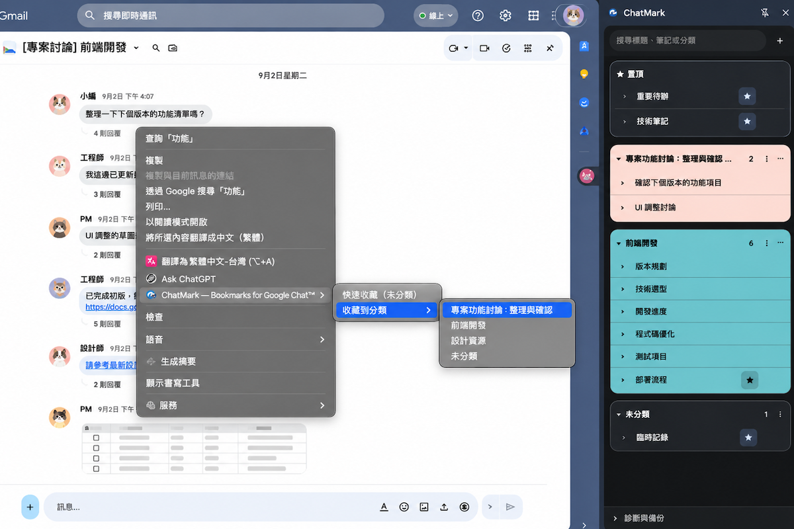
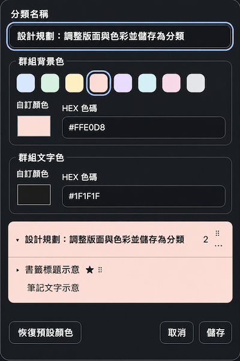

Save the message.
Return to the conversation.
Links, decisions, and tasks get buried in long conversations. ChatMark lets you bookmark messages in standalone Google Chat or Chat inside Gmail, organize them in one shared side panel library, and return when you need them.
ChatMark is an independently developed, unofficial extension. It is not provided, sponsored, or endorsed by Google.

Keep important conversations within reach
- Use Google Chat or Gmail
- Save messages on standalone chat.google.com or in Chat embedded in Gmail. Both websites share the bookmarks and categories in your current Chrome profile, so you can keep organizing when you switch between them.
- Bookmark directly from a message
- Right-click a Google Chat message to save it as uncategorized or choose a category. The title is taken from the message, and you can save different messages from the same conversation separately. If you try to save the same message again, the notice lets you jump to the existing bookmark.
- Manage your categories
- Create, rename, or delete categories, then drag them into the order you want. Use the category’s More menu to choose background and text colors for its entire card. Expand or collapse categories to keep the side panel tidy.
- Search and edit bookmarks
- Search bookmark titles, category names, and notes, with title matches shown first. Edit titles and notes, delete bookmarks, or pin the ones you use most. Pinned bookmarks appear at the top of the side panel and in their original category.
- Organize with drag and drop
- Drag bookmarks to reorder them within a category, move them to another category, or arrange pinned items. Categories remember whether you left them expanded or collapsed.
- Undo mistakes
- Before deleting a category, you’ll see how many bookmarks it contains and be asked to confirm. You can undo the most recent bookmark or category deletion, and undo a new save from its confirmation notice.
- Return to the original message
- Open a bookmark from the side panel to return to its saved message location in the current Google Chat or Gmail tab and read the surrounding conversation. Standalone Google Chat switches within the page without reloading the entire website.
- Find the instructions again
- Right-click the ChatMark icon in Chrome’s toolbar and choose 「ChatMark 官網與使用說明」 (ChatMark website and instructions), or select 「ChatMark 官網與使用說明」 (ChatMark website and instructions) at the bottom of the side panel. Either opens this website in a new tab.
Recognize categories by color
Use a category’s More menu and choose 「編輯分類」 (Edit category) to set the background and text colors of its entire card. Choose a preset background color, or use the color pickers and six-digit HEX fields for precise colors.
Preview the title, bookmarks, and notes before saving. You can reset both colors together later. The Uncategorized category keeps its default appearance.

Your bookmarks stay in your browser
Bookmarks are stored in your current Chrome profile. They do not automatically sync across devices or upload to the developer. In the side panel’s diagnostics section, you can manually export a JSON backup of your entire library. Restoring it replaces the current library. This is a personal backup; exporting a selected category for sharing or merging imported bookmarks is not supported.
Read the full privacy policyBefore you get started
Bookmarking works on the standalone Google Chat website (chat.google.com) and in the Chat tab and conversation views inside Gmail (mail.google.com). Open a conversation on either website and right-click a message to save it. Both websites share the bookmark library in your current Chrome profile. Bookmarks open in the tab hosting the side panel. You still need a Google account with access to a conversation to open its bookmarks.
Questions & answers
What is ChatMark?
ChatMark is a Chrome extension for bookmarking, organizing, and searching messages in standalone Google Chat or Chat inside Gmail. You can return to the original conversation from its side panel.
How do I bookmark a Google Chat message?
Open the standalone Google Chat website or Chat from Gmail’s left navigation, enter a conversation, and right-click the message. Choose the quick save option or a category. You can then find the message in the ChatMark side panel.
Does ChatMark work on the standalone chat.google.com website?
Yes. Both standalone Google Chat and Chat inside Gmail support right-click bookmarking, the side panel, and returning to messages. They share the bookmark library in your current Chrome profile.
How can I organize categories and bookmarks?
You can create, rename, delete, and drag categories into order, and choose background and text colors for each regular category card. Drag bookmarks to reorder or move them between categories; you can also search, edit titles and notes, and pin frequently used bookmarks.
How do I set or reset category colors?
Open a regular category’s More menu and choose 「編輯分類」 (Edit category). Pick a preset background color, or use the color pickers or six-digit HEX fields for the background and text. Preview the full card, then save. 「恢復預設顏色」 (Restore default colors) resets both colors. The Uncategorized category keeps its default appearance.
Where does a bookmark take me?
Clicking a bookmark in the side panel returns you to that message in the current Google Chat or Gmail tab, where you can read the surrounding conversation. Your Google account must still have access to the conversation.
Do my bookmarks sync across devices?
No. Bookmarks stay in your current Chrome profile. They are not automatically synced to other devices or uploaded to the developer. See the privacy policy.
How do I back up or restore my bookmarks?
In the side panel’s diagnostics section, you can manually export your entire bookmark library as a JSON file. Restoring a backup replaces your current library, so keep a copy of anything you need. See the backup and restore details.
Where can I find the instructions again?
Right-click the ChatMark icon in Chrome’s toolbar and choose 「ChatMark 官網與使用說明」 (ChatMark website and instructions), or select 「ChatMark 官網與使用說明」 (ChatMark website and instructions) at the bottom of the side panel. Both open this website in a new tab and keep your conversation tab open.
Is ChatMark an official Google product?
No. ChatMark is independently developed and unofficial. It is not provided, sponsored, or endorsed by Google.
Help make ChatMark better
Found a problem or have a feature in mind? Share your feedback on GitHub Issues. Please keep private conversations and complete backups out of public posts.
Google Chat and Gmail are trademarks of Google LLC. Use of these trademarks is subject to Google Permissions.